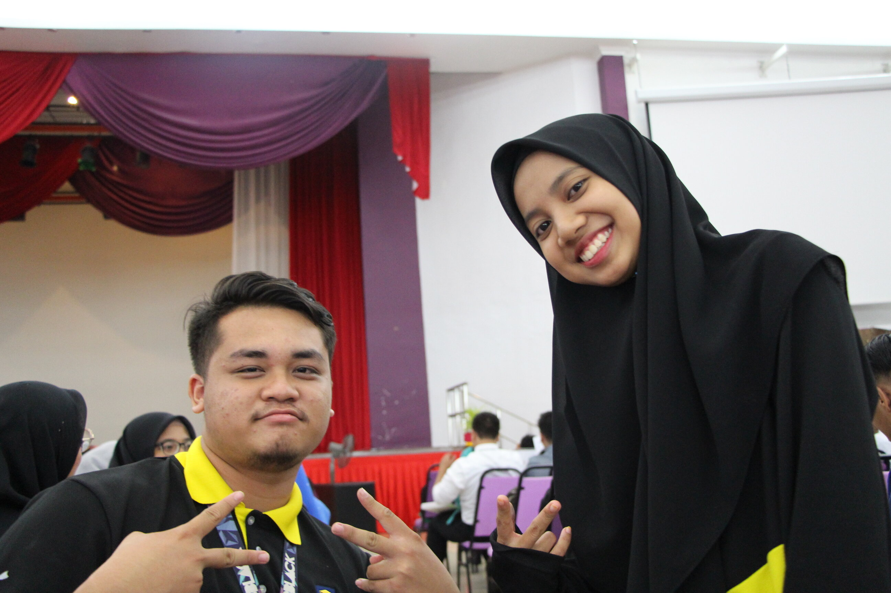
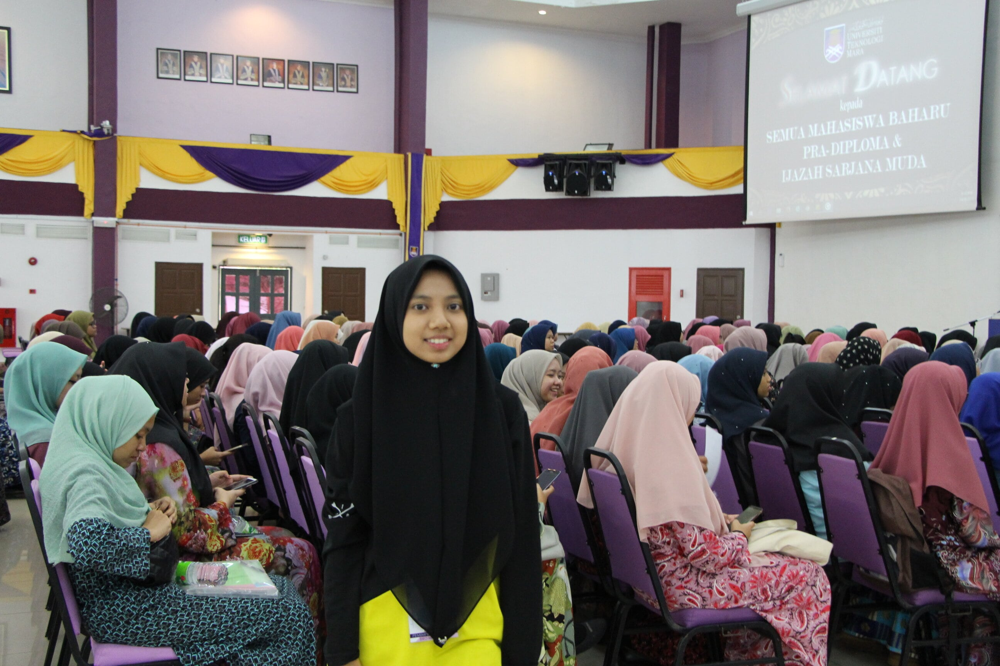
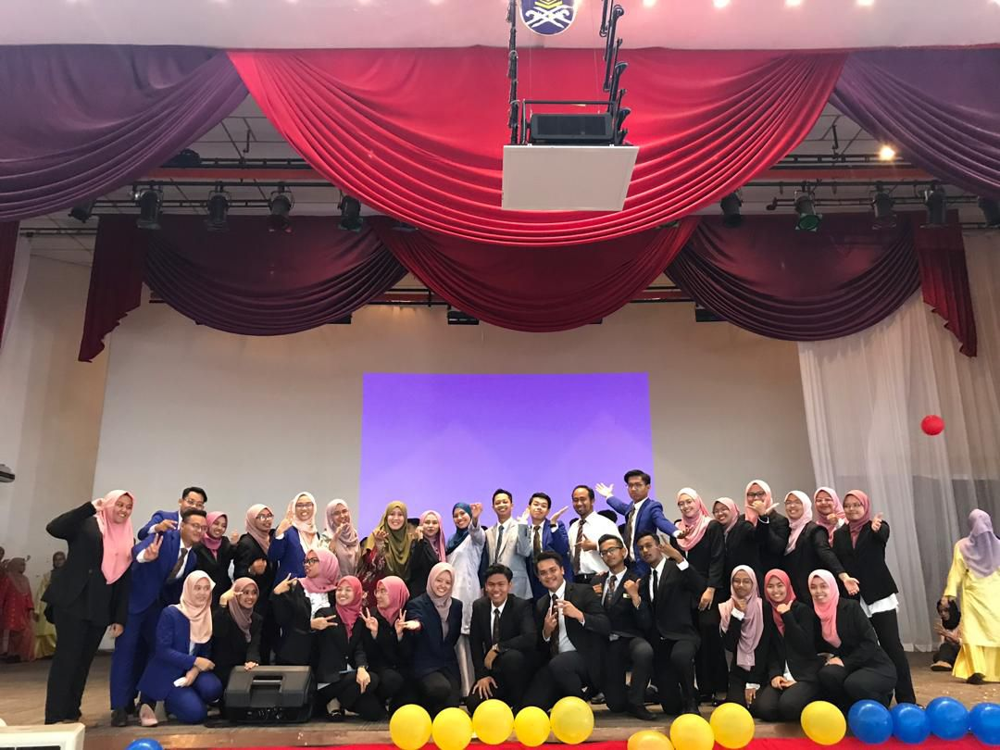
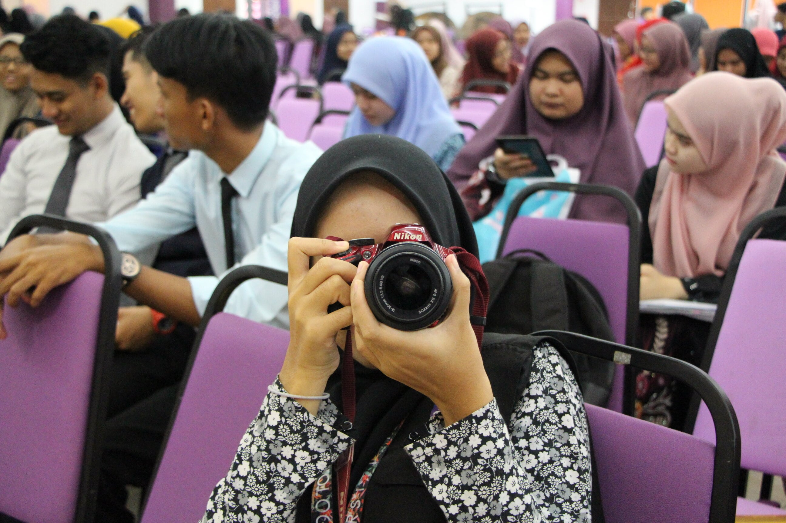

MDS

Another programme that I involved myself with is Minggu Destini Siswa. I decided to join MDS because I was too bored with nothing to do during my semester break. To participate, I need to fill in some form and send it to HEP and wait for the result whether I'm chosen or not to be one of the Pemimpin Mahasiswa. I don't remember what position I requested for because there's a lot options provided. But then maybe they heard my inner prayer and yeah I'm on it. But before that, we have to go to some leadership camp to train and brainwash ourselves in other to preserve the best outcome. Oh, of course the main objective is to get along with each other so it's easier to cooperate. Teamworks important right? I met a whole new people that I barely recognize them at UiTM. There are some faces that I never met but they're exist fortunately. It was fun and exciting as it was held at some village-like location? So it gaves out mother-nature aura. On our last day, we were assigned to our Biro -> Protocol -> ME. Ey, what? How? I- another new thing to discover.
I learned that protocol have the most important task in delivering a successful event as it controls the flow of the event and guest layout. From emcee to backstage, everything is on Protocol responsibilities. Oh how difficult can it be? Well, we need to entertain the students between the gasp and that's where we have to do some dancing and jokes risking if they would respond greatly or just watched us with weird face. It is where I gained my confident and improve my communication skills. Here, communication is the top most important things to secure. We did not manage a few people but we manage up to 1000 new students that comes from various background. It was a great deal when you have to face them but thing becomes easy when you have great people in your team.
I joined another MDS after another to collect every possible experience offered. Every MDS gives a different knowledge. I was appointed not just as Protocol team but also in Multimedia team where I have to manage every slides and videos presented in the screen or during any session that need to use a persentation slide. Being in multimedia team means less appearance in pictures and infront of students as I have to sit at the backstage most of the times and sometimes I will grab a DSLR and went through the hall around and around capturing anyone asleep before I'm back at backstage. Hey, that's not cheating okay? It's one of our work too. Another one, I get to walk around and follow students' activity either in the field or library. If I were a protocol, I won't be able to do that as my home is at the main hall doing setup for the next slot.
MDS taught me on leadership skill and building my confident plus my communication skills in involving a large scale and scope. A big thanks to whoever chose me to be one of your team, my teammates, MPP, friends and staffs that helps me improving my life and experience day by day.
  .